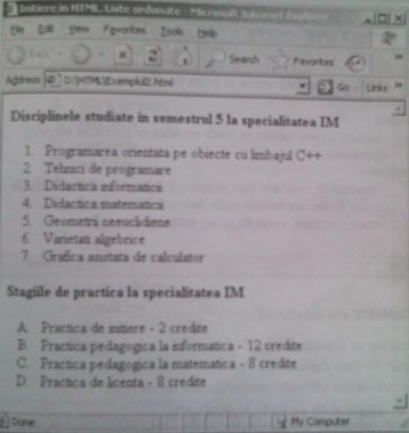
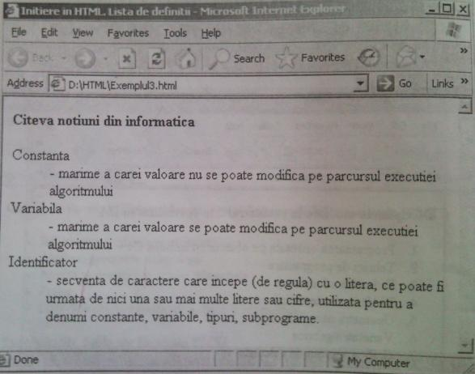
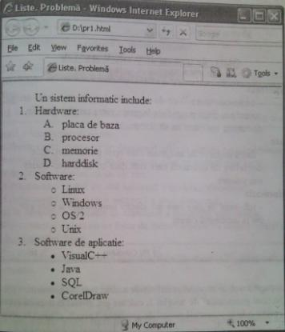
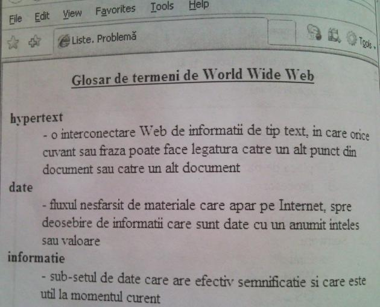

Liste
Pentru organizarea structurată a informaţiei unui document html se pot folosi listele. Deosebim: a) liste neordonate; b) liste ordonate; c) liste de definiţii.
a) Listele neordonate se utilizează pentru a indica o succesiune fără o subordonare ierarhică.
° Pentru a specifica începutul şi sfîrşitul unei astfel de liste se utilizează etichetele <UL> Şi </UL> ("unordered list" - listă neordonată).
° Orice element al listei este precedat de eticheta <LI> ("list item" - nu este nevoie de eticheta </LI>).
Fiecărei dintre etichetele <UL>, <LI> i se poate ataşa atributul type, care poate lua una dintre următoarele trei valori: Circle, Square, Disc. Acest atribut specifică marcajul care precede fiecare element al listei.
b) Listele ordonate (se mai numesc liste numerotate) se încadrează între etichetele <OL> şi </OL> ("ordered list" - listă ordonată).
Ca şi în cazul listei neordonate, orice element al listei ordonate este precedat de eticheta <LI>. Atributul type al etichetelor <OL> şi </OL> (în cazul acestei liste) poate lua una din valorile: A, a, I, i, 1.
Dacă atributul type nu este specificat, elementele listei vor fi numerotate.
c) Listele de definiţii se utilizează, de regulă, pentru organizarea glosarelor. Termenii unui glosar sînt listaţi în ordine alfabetică, fiecare fiind urmat de definiţia lui..
°Listele de definiţii se încadrează între etichetele <DL> şi </DL> (" definition list " - listă de definiţii).
°Fiecare termen al listei este precedat de eticheta <DT> (" definition term" - termen definit), iar definiţia (descrierea) lui - de eticheta <DD> (" definition descrip- tion " - descrierea definiţiei).
Observaţii
1. Listele pot fi imbricate.
2. În interiorul unei liste sînt permise utilizarea etichetelor <P> şi <BR> şi a elementelor de formatare a textului.
3. Listă ordonată poate fi întreruptă pentru un text. În acest caz se folosesc două seturi de etichete <OL>:
una pentru prima parte a listei (pînă la textul inserat) şi alta pentru partea a doua (după text). În acest caz etichetei <OL> din partea a doua a listei i se ataşează atributul start cu valoarea întreagă, care indică începutul numerotării.
Exemplul 1
<HTML>
<Head>
<Title> Initiere in HTML. Liste neordonate </Title>
</Head>
<Body>
<H4>Catedrele facultatii Fizica, Matematica si
Tehnologii Informationale (FMI)<H4>
<UL>
<LI> Informatica si tehnologii informationale <LI> Algebra, geometrie si topologie <LI> Analiza matematica si ecuatii diferentiale <LI> Fizica
<LI> Metodica predarii matematicii, fizicii si informaticii </UL>
<H4>Specialitatile duble ale facultatii FMI</H4>
<UL TYPE=square>
<LI>Informatica si matematica <LI> Matematica si informatica <LI> Informatica si fizica <LI> Fizica si informatica <LI> Informatica si limbi moderne aplicate <LI> Matematica si fizica <LI> Fizica si matematica </UL>
</Body>
</HTML>

Exemplul 2
<HTML>
<Head>
<Title> Iniţiere in HTML. Liste ordonate</Title>
</Head>
<Body>
<H4>Disciplinele studiate in semestrul 5 la specialitatea IM </H4> <0L>
<LI> Programarea orientata pe obiecte cu limbajul C++
<LI> Tehnici de programare <LI> Didactica informaticii <LI> Didactica matematicii <LI> Geometrii neeuclidiene <LI> Varietati algebrice <LI> Grafica asistata de calculator < /0L>
<H4>Stagiile de practica la specialitatea IM</H4>
<0L TYPE=A>
<LI> Practica de iniţiere - 2 credite <LI> Practica pedagogica la informatica - 12 credite <LI> Practica pedagogica la matematica - 8 credite <LI> Practica de licenţa - 8 credite </0L>
</Body>
</HTML>

Exemplul 3
<HTML>
<Head>
<Title> Iniţiere in HTML. Lista de definiţii</Title>
</Head>
<Body>
<H4> Citeva noţiuni din informatica </H4>
<DL>
<DT> Constanta <DD> - mărime a cărei valoare nu se poate modifica pe parcursul execuţiei algoritmului
<DT> Variabila <DD> - mărime a cărei valoare se poate modifica pe parcursul execuţiei algoritmului
<DT> Identificator <DD> - secvenţa de caractere care incepe (de regula) cu o litera, ce poate fi urmata de nici una sau mai multe litere sau cifre, utilizata pentru a denumi constante, variabile, tipuri, subprograme.
</DL>
</Body>
</HTML>

Întrebări de control
1. Cu ce scop se folosesc listele?
2. Ce tipuri de liste cunoaşteţi?
3. Numiţi etichetele utilizate pentru fiecare tip de listă?
4. Cum se specifică un element al unei liste?
5. Care sînt atributele acestor etichete şi ce valori pot primi ele?
Sarcini pentru lucrul independent:
1.Creaţi o pagină web care va afişa titlul " Disciplinele preferate " pe fundal bleu, de
nivelul 4, după care va urma o listă neordonată cu disciplinele respective. În calitate
de semn de marcare se va folosi pătratul.
2.Creaţi o pagină web care va afişa titlul " Obiectele studiate în primul an universitar
de studiu " pe fundal bleu, de nivelul 3, după care va urma o listă neordonată cu aceste
obiecte. În calitate de semn de marcare se va folosi discul. După listă vor fi două
rînduri goale şi va apărea altă listă neordonată cu examenele şi notele unei sesiuni.
3.Creaţi o pagină web care va afişa titlul " Lista studenţilor grupei " pe fundal de culoare
aqua, de nivelul 5, aliniat la centru, după care va urma o listă neordonată cu numele
studenţilor grupei. După listă vor fi două rînduri goale şi va apărea altă listă neordonată
cu numele studenţilor care la ultima sesiune au obţinut note mai mari decît 8.
4. Creaţi un document html care va afişa următoarea pagină web:

5. Creaţi o pagină web care va afişa titlul " CUPRINS " de nivelul 3, după care vor urma capitolele unei cărţi şi temele cuprinse în aceste capitole. Folosiţi liste ordonate şi liste imbricate.
6. Creaţi o pagină web care va afişa două liste ordonate: prima cu titlul " Produse alimentare " de nivelul 2, în care elementele vor fi numerotate, iar cealaltă cu titlul " Produse industriale " de nivelul 3, care vor fi numerotate cu litere.
7. Creaţi o pagină web care va afişa o listă ordonată a instituţiilor superioare de învăţămînt din ţară. Lista va fi întreruptă de următorul text cursiv: " Acestea au fost instituţiile de învăţămînt superior de stat, acum urmează instituţiile de învăţămînt superior particulare:" .Titlul listei va avea nivelul 4 şi culoarea albastră
8. Creaţi un document html care va afişa următoarea pagină web:

9. Creaţi o pagină web care va afişa definiţiile a cinci noţiuni geometrice precedate de titlul " Noţiuni geometrice " de nivelul 3, culoare gri, aliniat la dreapta şi despărţit de noţiuni printr-o linie orizontală neagră de grosimea 3 pixeli, aliniată la centru.